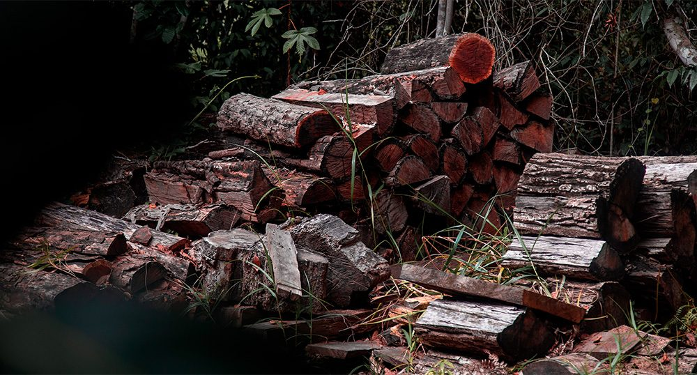
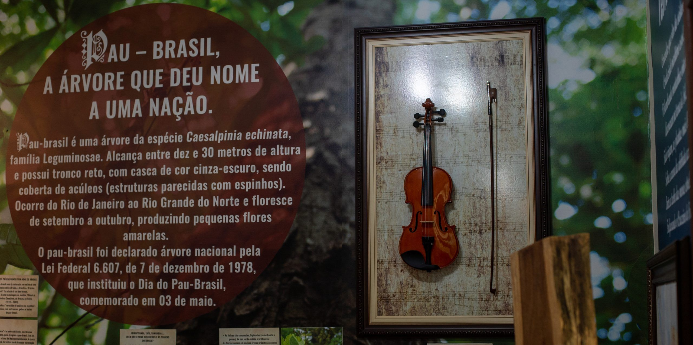
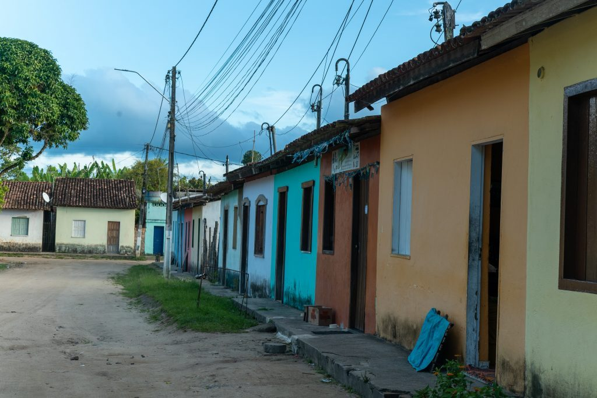
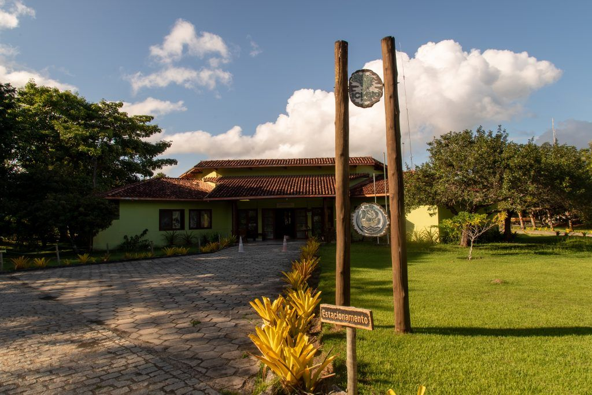

Whoever arrives at Pau Brasil National Park (PNPB), in Porto Seguro, in southern Bahia, is invited to learn about the history of the wood that gives the country its name. The visitor center tells, through panels, the history of pau-brasil cycles, from its use as a fabric dye during Portuguese colonization, to the making of violin bows from the 19th century onwards. One of those murals informs that great symphonic orchestras use pau-brasil to make violin bows. The caption does not say that the bow on display is not made of the tree that is the symbol of the country, nor that park employees frequently need to curb the actions of criminals who are part of an illegal scheme that supplies the noble market of archetry — the art of making these bows.
Pau-brasil has been threatened with extinction since 1992. Any extraction of this wood without authorization is a crime. Piauí magazine, in partnership with the Fiquem Sabendo data agency, obtained exclusive expert reports and documents from the Federal Police (PF) and the US Fish and Wildlife Service. The documents reveal details of the wood trafficking scheme investigation and, for the first time, attest that part of the raw material found with bow manufacturers and businessmen illegally left the park nestled in the Coast of Discovery, a UNESCO world heritage site and home to Atlantic Forest species.
O pau-brasil está, desde 1992, ameaçado de extinção. Qualquer extração dessa madeira sem autorização é crime. A revista piauí, em parceria com a agência de dados Fiquem Sabendo, obteve laudos e relatórios inéditos da Polícia Federal (PF) e da agência governamental americana US Fish and Wildlife Service. Os documentos revelam detalhes da investigação do esquema de tráfico de madeira e, pela primeira vez, atestam que parte da matéria-prima encontrada com fabricantes de arcos e empresários saiu ilegalmente do parque encravado na Costa do Descobrimento, patrimônio natural mundial da Unesco e abrigo de espécies da Mata Atlântica.

Violin on display at PNPB headquarters. The violin bow is usually produced with the heartwood of the tree. | Photo by Joana Moncau
Inside the park
Dentro do parque
About 20 meters from the space open to tourists, Piauí found, in April of that year, a place closed to visitors: an open-air depot of felled trees, including pau-brasil logs. Before they could supply illegal markets, they were intercepted by environmental inspectors working in the park, an area of 19,000 hectares under the responsibility of the Chico Mendes Biodiversity Conservation Institute (ICMBio), an agency linked to the Ministry of Environment.
A cerca de 20 metros do espaço aberto aos turistas, a piauí conheceu, em abril deste ano, um lugar interditado aos visitantes: um depósito a céu aberto de árvores cortadas, incluindo toras de pau-brasil. Antes que seguissem para abastecer mercados ilegais, elas foram interceptadas por fiscais ambientais que atuam no parque, uma área de 19 mil hectares sob responsabilidade do Instituto Chico Mendes de Conservação da Biodiversidade (ICMBio), autarquia vinculada ao Ministério do Meio Ambiente (MMA).
The depot is a memory, albeit partial, of the advance of wood smugglers on a federally protected area. According to ICMBio, the logs will be used to build bridges and lookouts within the park. Created as a conservation unit in 1999, Pau Brasil National Park is surrounded by seven districts. In the neighborhood, there are still Arraial D'Ajuda and Trancoso, two points of luxury tourism in Brazil. It is residents of poorer communities, such as Vale Verde and Coqueiro Alto, not yet incorporated into the logic of tourism, who participate more actively in the park's wood extraction network, disputed by rival criminal groups.
O depósito é uma memória, ainda que parcial, do avanço de contrabandistas de madeira sobre uma área federal e protegida por lei. Segundo o ICMBio, as toras serão utilizadas para construir pontes e mirantes dentro do parque. Criado como unidade de conservação em 1999, o Parque Nacional do Pau Brasil é rodeado por sete distritos. Na vizinhança, ainda estão Arraial D'Ajuda e Trancoso, dois points do turismo de luxo no Brasil. São moradores de comunidades mais pobres, como Vale Verde e Coqueiro Alto, ainda não incorporados à lógica do turismo, que participam mais ativamente da rede de extração de madeira do parque, disputada por grupos criminosos rivais.
"This entire illegal economic circuit is very profitable. They are people who end up seeing pau-brasil as an opportunity for easy money."
Environmental analyst Fábio Faraco, former ICMBio chief at the park
According to environmental analyst Fábio Faraco, former ICMBio chief at the park, a person can earn, from one or two nights of work with illegal cutting, up to 500 reals, equivalent to almost half a minimum wage. He headed the conservation unit until 2019. At night, the sound of chainsaws, turned on to fell trees in the park, reaches the home of a 25-year-old rural producer, a resident of the rural area of Vale Verde, 2 km away. The conservation unit and the rural community are connected by four dirt roads.
Segundo o analista ambiental Fábio Faraco, ex-chefe do ICMBio no parque, uma pessoa pode ganhar, por uma ou duas noites de trabalho com o corte ilegal, até 500 reais, o equivalente a quase metade de um salário mínimo. Ele esteve à frente da unidade de conservação até 2019. À noite, o som das motosserras, ligadas para derrubar árvores do parque, chega à casa de um produtor rural de 25 anos, morador da zona rural de Vale Verde, a 2 km dali. A unidade de conservação e a comunidade rural são unidas por quatro estradas de terra.
In February of that year, when passing through one of them, around 8 p.m., the farmer (whose name will be kept confidential for security reasons) came face to face with two men on a truck and a motorcycle, heading to the park. One of them told him: "We're going to leave loaded." Loaded with pau-brasil.
Em fevereiro deste ano, quando passava por uma delas, por volta das 20 horas, o agricultor (cujo nome será mantido em sigilo por motivo de segurança) deu de cara com dois homens a bordo de um caminhão e uma moto, rumo ao parque. Um deles lhe disse: "Vamos sair carregados." Carregados de pau-brasil.
A complex operation
Uma operação complexa
Since the beginning of this year, ICMBio has been investigating new reports of tree felling within the park. Between January and March, six bonfires were found inside the unit, traces of the presence of wood thieves and hunters. Trees of all kinds are targeted by smugglers, but the most coveted target is pau-brasil, a noble wood with high resistance that does not rot or is attacked by insects — which is why it is considered ideal for violin bows.
Desde o início deste ano, o ICMBio apura novas denúncias de derrubada de árvores dentro do parque. Entre os meses de janeiro e março, seis fogueiras foram encontradas no interior da unidade, rastros da presença de ladrões de madeira e caçadores. Árvores de todo tipo estão na mira dos contrabandistas, mas o alvo mais cobiçado é o pau-brasil, uma madeira de alta nobreza e resistência, que não apodrece nem é atacada por insetos – e por isso tudo considerada ideal para arcos de violino.
Within the park, tree felling typically takes two nights, one for cutting and another for loading the wood. The scheme can involve at least five people: two to fell the trees, two to keep watch, and a driver who transports the wood logs to rural properties or illegal carpentry shops in the region. Before that, the trunks are cut into pieces, which makes it difficult to identify the species and facilitates transportation.
Dentro do parque, a derrubada de árvores costuma durar duas noites, uma para cortar e outra para carregar a madeira. O esquema pode englobar ao menos cinco pessoas: duas para decepar as árvores, duas para vigiar e um motorista, que leva as toras de madeira para propriedades rurais ou marcenarias ilegais na região. Antes, os troncos são cortados em pedaços, o que dificulta a identificação da espécie e facilita o transporte.
Since at least 2016, teams from the Federal Police, Ibama, and ICMBio have been carrying out operations to try to break the illegal cycle of pau-brasil removal from the park. In July of that year, an internal report prepared by the then park managers had already identified three gangs of criminals, each made up of seven people. That same month, before the document was drawn up, Diego Lopes de Oliveira, 36, a former firefighter at the park, was found by military police with twenty logs of pau-brasil and arrested for environmental crime and criminal association.
Ao menos desde 2016, equipes da PF, do Ibama e do ICMBio realizam operações para tentar romper o ciclo ilegal de retirada do pau-brasil do parque. Em julho daquele ano, um relatório interno elaborado pelos então gestores do parque já havia identificado três bandos de criminosos, cada um deles formado por sete pessoas. Naquele mesmo mês, antes da elaboração do documento, Diego Lopes de Oliveira, 36, ex-brigadista no parque, foi encontrado por policiais militares com vinte toras de pau-brasil e detido por crime ambiental e associação criminosa.

Illegal wood found during inspections at Pau Brasil National Park | Photo by Joana Moncau
A pyramid of crime
Uma pirâmide do crime
"Peons" like Oliveira, who cut wood inside the park, are the base of the pau-brasil smuggling pyramid. In the middle is the artisan who receives the wood without legal origin. At the top, businessmen who export the product, with profit similar to cocaine trafficking. A wooden stick from the raw material used to make the bow can cost from 20 to 40 reals, according to Federal Police. In a store abroad, some bow models can cost more than 20,000 reals.
"Peões" como Oliveira, que cortam madeira dentro do parque, são a base da pirâmide do contrabando do pau-brasil. No meio está o artesão que recebe a madeira sem origem legal. No topo, empresários que exportam o produto, com lucro semelhante ao do tráfico de cocaína. Uma vareta da matéria-prima, usada para fabricar o arco, pode custar de 20 a 40 reais, segundo a PF. Em loja no exterior, alguns modelos de arco podem custar mais de 20 mil reais.
Raw material
Per wooden stick
Retail price
Violin bow in stores
Since 2021, Federal Police and Ibama have been investigating the scheme in the so-called Operation Ibirapitanga, which last year alone carried out 37 search and seizure warrants — three of them in southern Bahia. The businessmen accused of using illegally obtained wood have always claimed that the raw material for producing the bows came from their own plantations or donations from older, authorized extractions, within the law.
Desde 2021, Polícia Federal e Ibama investigam o esquema na chamada Operação Ibirapitanga, que só no ano passado cumpriu 37 mandados de busca e apreensão – três deles no Sul da Bahia. Os empresários acusados de usar madeira obtida ilegalmente sempre alegaram que a matéria-prima para produzir os arcos vinha de plantios próprios ou doações de extrações mais antigas, autorizadas e dentro da lei.
What the documents obtained by Piauí show, however, is that a considerable part of the wood leaves the park in Bahia. Federal Police experts studied the anatomical composition of wood samples from the park and other samples seized at properties and yards of those investigated in the operation. The technical reports, finalized in December, pointed out that most of the seized samples "corresponds to those of reference origin from Pau Brasil National Park, of natural origin".
O que os documentos obtidos pela piauí mostram, porém, é que parte considerável da madeira sai do parque na Bahia. A perícia da Polícia Federal estudou a composição anatômica de amostras de madeira do parque e de outras apreendidas em propriedades e pátios dos investigados na operação. Os laudos técnicos, finalizados em dezembro passado, apontaram que a maior parte das amostras apreendidas "corresponde às de referência oriundas do Parque Nacional do Pau Brasil, de origem natural".
"Five years is impossible to make a bow; in thirty years, bows are produced. It's like whiskey. An eight-year-old won't be the same as a thirty-year-old."
Daniel Piotto, forest engineer and Yale University doctoral graduate

Technical forensic analysis of wood samples from the investigation | Photo by Joana Moncau
The hypothesis that the wood used by the investigated violin bow manufacturers is extracted from centuries-old trees is corroborated by the characteristics of pau-brasil necessary to make a bow, which require more mature trees. After extraction, the species takes a minimum of two years to dry and be handled. A violin bow is usually produced with the heartwood of the tree. The heartwood is a softer part, like marrow. It takes time to develop.
A hipótese de que a madeira utilizada pelos fabricantes de violino investigados é extraída de árvores centenárias é corroborada pelas características do pau-brasil necessárias para fabricar um arco, que demandam árvores mais maduras. Depois de extraída, a espécie demora, no mínimo, dois anos para secar e ser manuseada. Um arco de violino costuma ser produzido com o cerne da árvore. O cerne é uma parte mais mole, tipo uma medula. Demora a se desenvolver.
Violence and power struggles
Violência e disputas de poder
In addition to illegal wood extraction, other environmental crimes, such as hunting, illegal sand extraction, and invasion and occupation of areas without authorization, are frequently suppressed in the park. In the last decade, at least fifty violations have been recorded by ICMBio within the park, according to data obtained through the Information Access Law by the Fiquem Sabendo agency. Anyone who frequents the conservation unit is used to seeing the traces left by offenders. "We've seen hunters at six in the morning. We've seen guns," says advertising professional Daniel Silva, who counted twenty felled pau-brasil trunks on the ground in the park while cycling through one of the six trails there in 2021.
Além da extração ilegal de madeira, outros crimes ambientais, como a caça, extração de areia ilegal e invasão e ocupação de área sem autorização são frequentemente coibidos no parque. Na última década, ao menos cinquenta infrações foram registradas pelo ICMBio dentro do parque, segundo dados obtidos por meio da Lei de Acesso à Informação pela agência Fiquem Sabendo. Quem frequenta a unidade de conservação está acostumado a ver os rastros deixados por infratores. "Já vimos caçadores às seis da manhã. A gente já viu armas", conta o publicitário Daniel Silva, que contou vinte troncos de pau-brasil cortados no chão do parque enquanto percorria, de bicicleta, uma das seis trilhas do lugar, em 2021.
Another challenge for ICMBio is the permanence, inside and around the park, of various private areas that have not been expropriated. The creation of the conservation unit, more than two decades ago, and its expansion in 2010 faced resistance from medium and large landowners who wanted to keep possession of their farms. Almost half of the park's area (46%) is still not regularized, according to ICMBio. The institution has adopted a strategy to increase this share: if a person or company needs to regulate another area within the same biome, they can, as compensation, buy land inside the park and donate it to the State. To this day, there are plots of land inside the park fenced with gates and padlocks, beyond the reach of authorities.
Outro desafio para o ICMBio é a permanência, no interior e no entorno do parque, de diversas áreas privadas que não foram desapropriadas. A criação da unidade de conservação, há mais de duas décadas, e sua ampliação em 2010 enfrentaram resistência de médios e grandes proprietários que queriam manter a posse de suas fazendas. Quase metade da área do parque (46%) ainda não está regularizada, segundo o ICMBio. A instituição tem adotado uma estratégia para aumentar essa fatia: se uma pessoa ou empresa precisa regulamentar outra área dentro do mesmo bioma, ela pode, como compensação, comprar terras dentro do parque e doá-las ao Estado. Até hoje há, dentro do parque, terrenos fechados com portões e cadeados, fora do alcance das autoridades.

The landscape of Pau Brasil National Park showing the intersection of protected and private areas | Photo by Joana Moncau
An example of this conflict between public and private happened in 2021. On September 27, ICMBio employees sent a request for help to the Federal Police. In the document, they requested "institutional support and protection," reporting that in the week following an inspection that caught illegal wood extraction on a private farm with access to the park from the back, they were informed of the murder of the property manager. The body was found outside the park, in the rural area of Queimado, a district neighboring the unit. The crime is being investigated by the Territorial Police Department of Arraial D'Ajuda, but the police inquiry has not yet been completed and it is not known whether there is any connection to the inspection.
Um exemplo desse conflito entre o público e o privado aconteceu em 2021. No dia 27 de setembro, servidores do ICMBio enviaram um pedido de socorro à Polícia Federal. No documento, solicitavam "suporte institucional e proteção," relatando que na semana seguinte a uma fiscalização que flagrou extração ilegal de madeira em uma fazenda privada com acesso ao parque pelos fundos, foram informados do assassinato do gerente do imóvel. O corpo foi encontrado fora do parque, na zona rural de Queimado, distrito vizinho à unidade. O crime é investigado pela Delegacia Territorial de Arraial D'Ajuda, mas o inquérito policial ainda não foi concluído e não se sabe se há ou não relação com a fiscalização.
Eight days before the manager was found dead, ICMBio found 26 trails linking the property to wood extraction areas inside the conservation unit. On the property, 36 cubic meters of native wood were found, mainly Paraju and Pequi, extracted illegally and used to decorate the ceilings of luxurious houses, according to authorities. The violation resulted in a fine of 58,000 reals.
Oito dias antes de o gerente ser encontrado morto, o ICMBio encontrou 26 trilhas ligando a propriedade a áreas de extração de madeira dentro da unidade de conservação. Na propriedade, foram encontrados 36 m3 de madeiras nativas, principalmente Paraju e Pequi, extraídas ilegalmente e usadas para ornamentar forros de casas luxuosas, segundo as autoridades. A infração gerou uma multa de 58 mil reais.